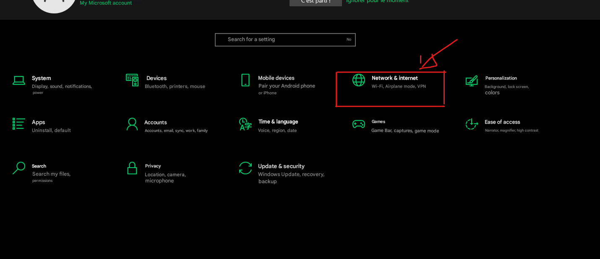
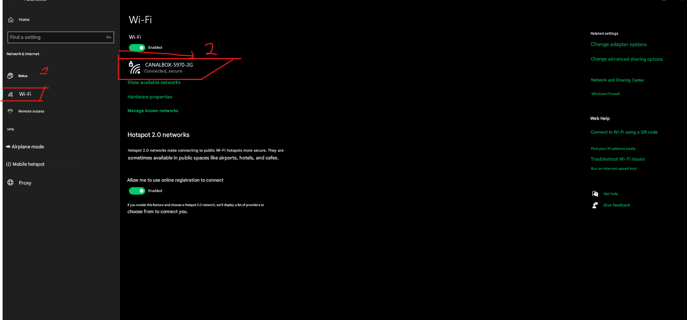
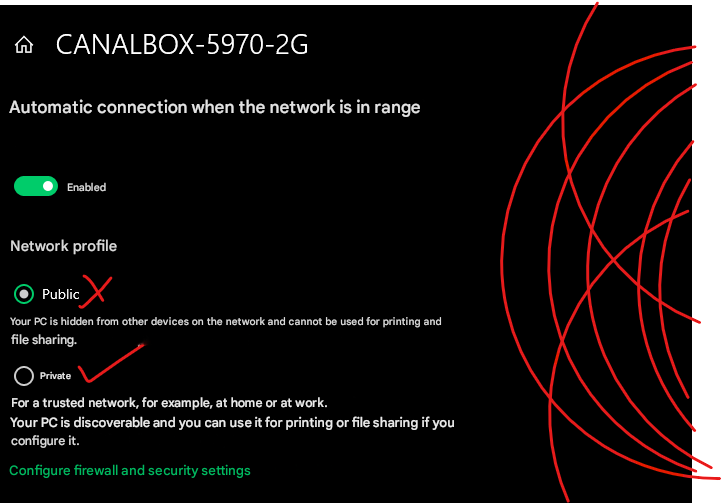

A comprehensive tutorial for switching from for seeting upd the app on any network in Windows.
0%Step 1 of 4100%
1
2
3
4
Step 1: Open Settings
(or press Win + I)
First, you need to navigate to your Windows Settings. You can do this by clicking the Start button and then the Settings icon (a gear).
Once there, click on Network & Internet.
Pro Tip: You can also right-click the network icon in your system tray and select "Network and Internet settings" for quicker access.

Step 2: Go to Wi-Fi settings
In the Network & Internet menu, click on the Wi-Fi option on the left-hand side.
Note: If you're using a wired connection, look for "Ethernet" instead of "Wi-Fi".

Step 3: Change the Network Profile
Finally, you will be on the Wi-Fi properties page for your connected network. Under Network profile, select the Private option. This will make your PC discoverable on the network for printing and file sharing.
Security Note: Only use Private network profile on trusted networks.

All Done!
You have successfully changed your network profile to Private. Your computer is now discoverable on the network try recontecing or restarting yoour computer pls .
What's Next?
Try reconnecting or restaring your computer and use the provide link below